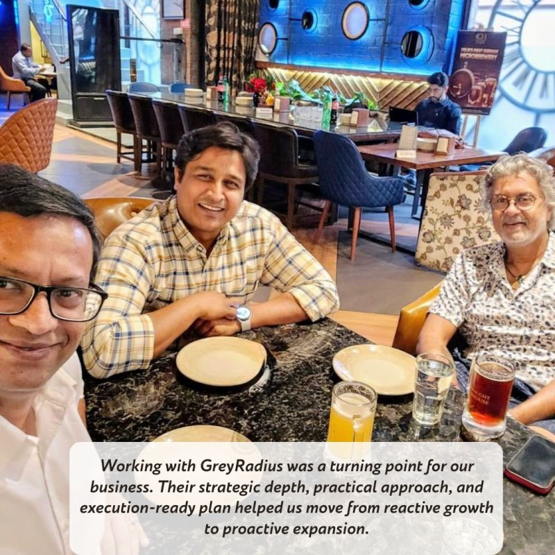
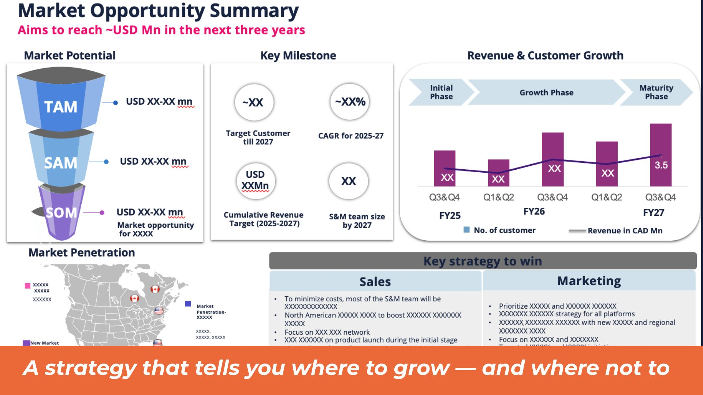
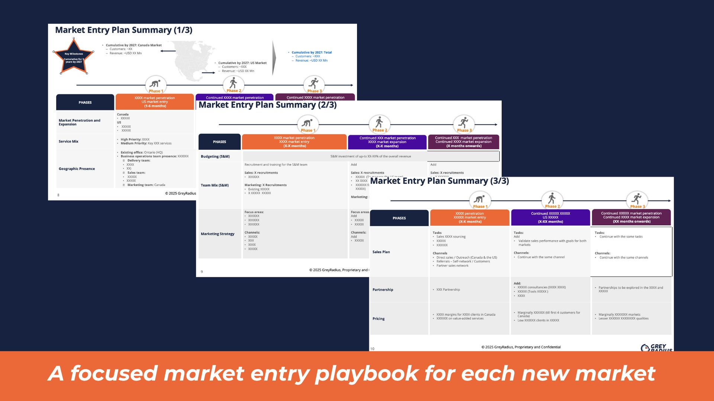
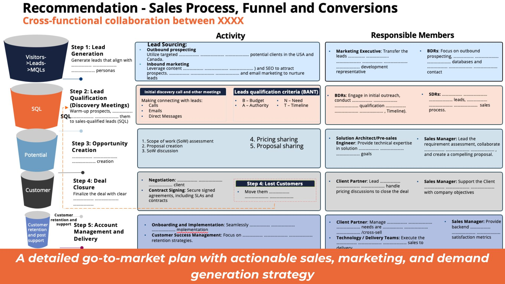
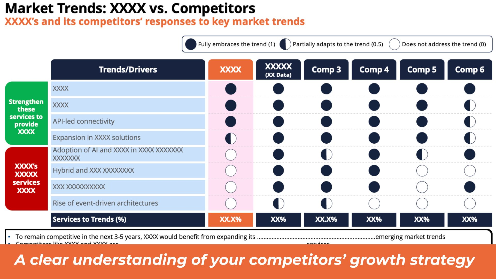

North America GTM Strategy for an Enterprise Integration Platform
An enterprise integration platform with strong Indian traction was ready to enter North America – but had no validated picture of which verticals to prioritise, how US enterprise buyers evaluated integration tools, or how to position against entrenched incumbents.
The Situation
A proven platform. An uncharted market. Entering North America without buyer intelligence is how SaaS companies burn runway.
An enterprise integration platform had built a strong base of customers in India – mid-market and enterprise clients across manufacturing, logistics, and financial services who valued the platform's flexibility and implementation support. With Series B funding secured, the leadership team had committed to entering North America within 18 months.
The challenge was that the US enterprise software market is fundamentally different from India: buyer evaluation criteria are different, procurement cycles are longer, compliance and security requirements are more stringent, and the incumbent landscape is dominated by well-funded players with established sales motions. The team needed to understand the market before committing sales headcount and GTM spend.
GreyRadius was engaged to conduct primary buyer research, build a vertical prioritisation framework, identify the addressable TAM, and deliver a sales playbook calibrated to US enterprise buying behaviour.
Engagement at a glance
Client
Enterprise integration platform (Trinetra)
Target market
United States – mid-market to enterprise
Service
Market Entry Execution · GTM Execution-as-a-Service
Research
12 enterprise buyer interviews across 5 verticals
US enterprise procurement is a different game. Feature lists don't win deals – risk reduction narratives do.
Different evaluation criteria
Indian enterprise buyers evaluate integration platforms primarily on flexibility, implementation support, and total cost of ownership. US enterprise buyers add security compliance, vendor financial stability, and implementation risk reduction as primary gate criteria. A GTM that had worked in India needed fundamental repositioning for the US market.
Entrenched incumbent landscape
The US enterprise integration market is served by well-funded incumbents – MuleSoft, Boomi, Workato – with established sales teams, partner networks, and brand recognition. A new entrant from India needed a positioning angle that neither their feature set nor their price point alone could create.
Vertical selection without data
The platform had potential fit across six US verticals. Entering all six simultaneously would dilute the sales effort below the threshold needed to build category recognition in any. Without buyer research across the verticals, there was no principled basis for prioritisation – only gut instinct and where existing relationships happened to sit.
Buyer intelligence first. Vertical focus second. A playbook built on what US enterprise buyers actually said.
Enterprise buyer research
Conducted 12 structured interviews with VP-level and director-level technology and operations buyers across five US verticals. Research surfaced the real evaluation criteria for enterprise integration platform decisions – including security compliance requirements, TCO framing, implementation risk mitigation, and the specific objections that stall deals against Indian software vendors in the US market.
Vertical prioritisation & TAM sizing
Assessed all six target verticals against buyer research findings – evaluating integration spend intensity, incumbent entrenchment, product fit, and the platform's competitive advantage relative to existing solutions. Selected three priority verticals – healthcare operations, mid-market financial services, and industrial manufacturing – with a combined addressable TAM of $50M in the first 24-month window. The remaining three were positioned as phase two expansion markets.
Competitive positioning & messaging
Designed a competitive positioning framework that didn't attempt to out-spend incumbents on brand or feature breadth – instead leading with implementation speed, total cost of ownership, and hands-on support as the primary differentiators. Developed vertical-specific messaging that connected the platform's capabilities to the exact operational pain each vertical was trying to solve.
Sales playbook development
Built a full US enterprise sales playbook – covering the typical buying committee structure, decision timeline, objection handling by buyer role, proof-of-concept structuring, and security questionnaire strategy. The playbook was calibrated specifically to address the concerns surfaced in the buyer interviews, giving the sales team a structured approach for each stage of the enterprise evaluation cycle.
"Entering North America without understanding enterprise procurement cycles is how SaaS companies burn runway. GreyRadius gave us the buyer intelligence to sequence our GTM correctly."
Three focused verticals. $50M TAM. A playbook that answers what US enterprise buyers actually ask.
Verticals
3 of 6 prioritised
Healthcare ops, mid-market financial services, and industrial manufacturing as phase one focus
Buyer research
12 enterprise interviews
VP and director-level buyers across all five assessed verticals – surfacing the real evaluation criteria
TAM
$50M addressable
Across three priority verticals in the first 24-month window
Playbook
Full US enterprise playbook
Buying committee map, objection handling, PoC structuring, and security questionnaire strategy
Structured findings from 12 enterprise buyer interviews – evaluation criteria by vertical, key objections, incumbent weaknesses, and competitive positioning opportunities.
Scored analysis of six US verticals with recommended phase one focus, addressable TAM per vertical, and phase two expansion timeline.
Positioning framework and vertical-specific messaging guide – connecting platform capabilities to buyer pain in each priority vertical.
Full playbook covering buying committee structure, decision timeline, objection handling by role, PoC design, and security questionnaire strategy.
From the engagement





The buyer research GreyRadius conducted was better than anything our sales team had gathered in 18 months. We now know exactly which verticals to prioritise and how to position against incumbents.
"North American enterprise software buyers evaluate integration platforms on three things: security compliance, total cost of ownership, and implementation risk. Companies that lead with feature lists lose to those who speak in terms of business outcomes and risk reduction."
Expanding a SaaS platform into North America or another new market?
We've helped enterprise software companies validate markets, build buyer-research-backed GTM strategies, and develop sales playbooks for new geographies. Talk to us.